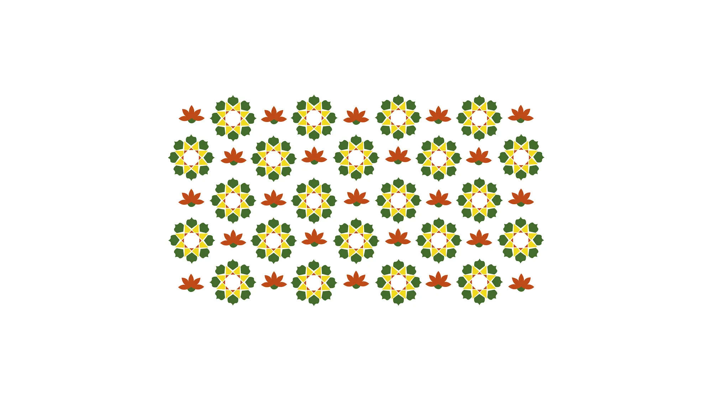
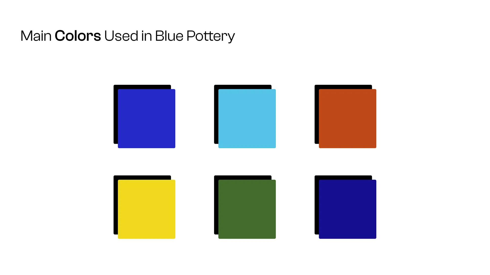
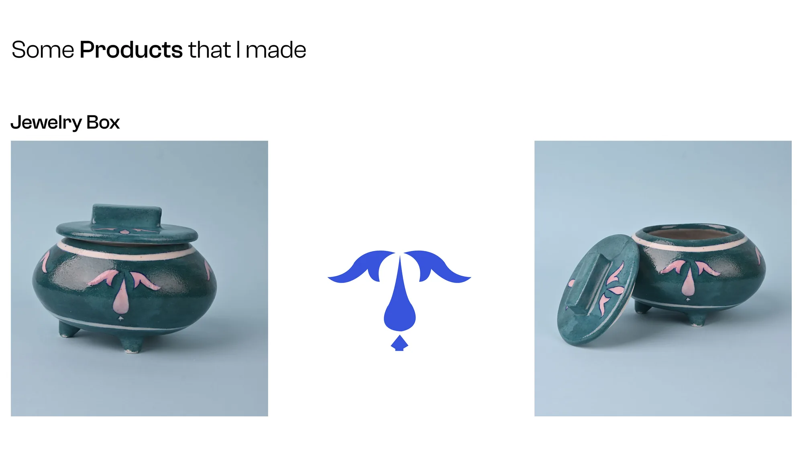
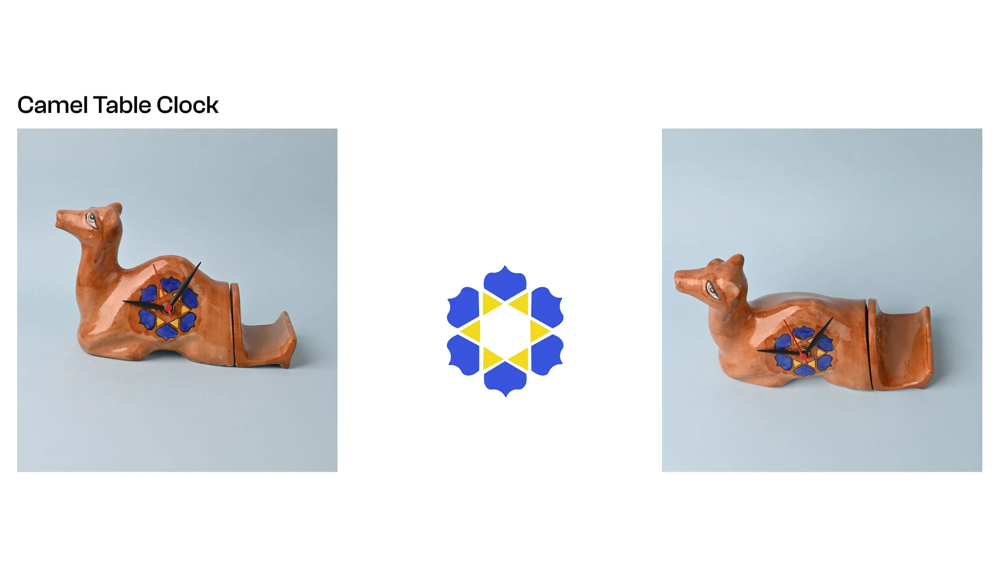
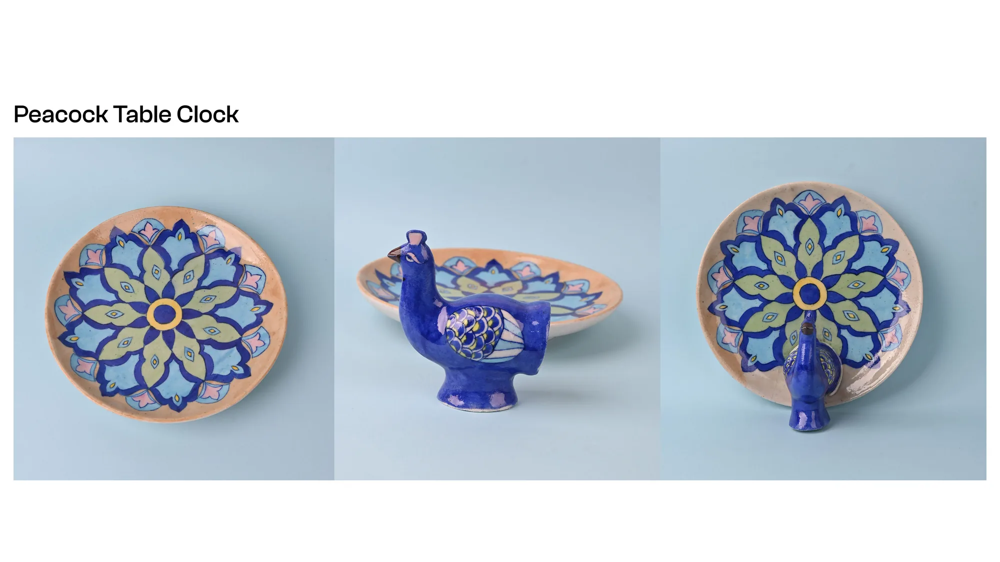
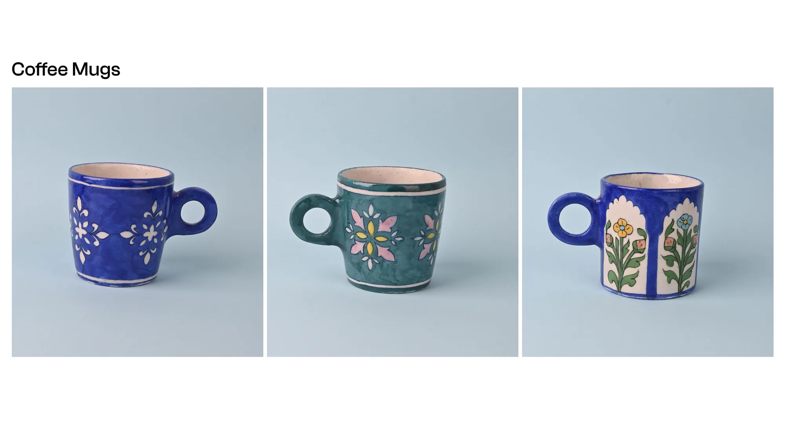
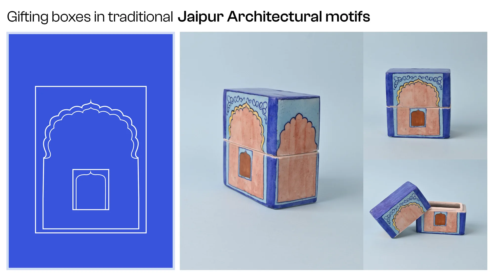
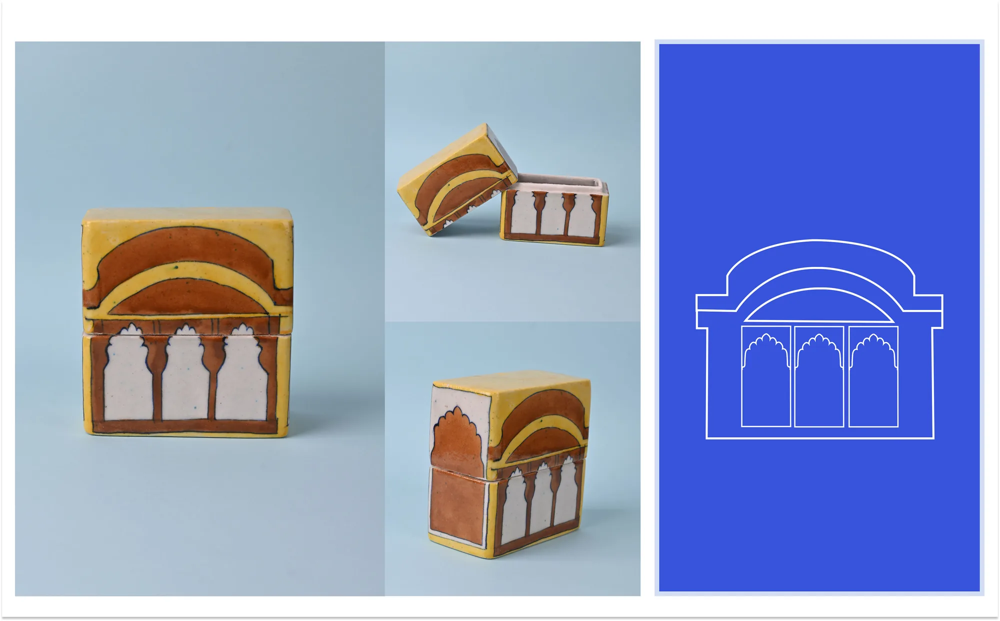
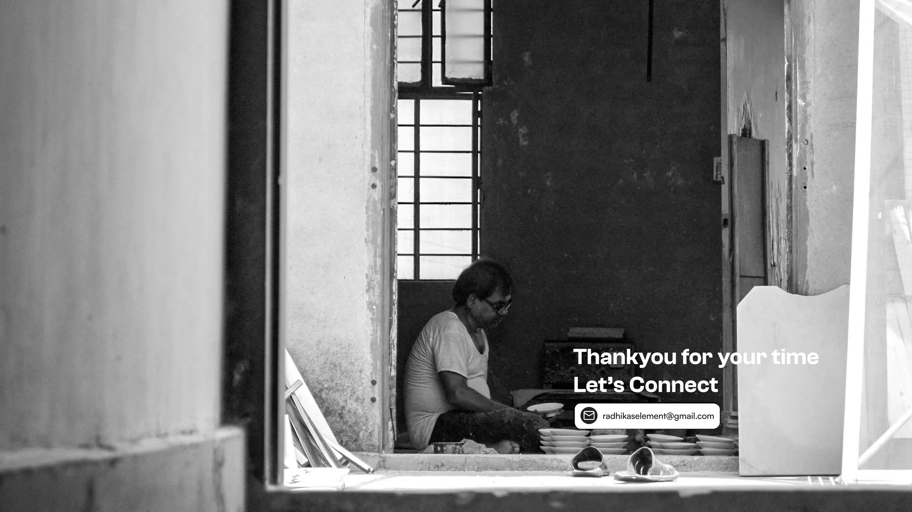

Blue Pottery Products
Beautiful and practical blue pottery products for everyday use — motifs, patterns, and objects inspired by the Jaipur tradition.
Jump to the HD boards↓View on Behance↗

Beautiful and practical.
Blue pottery is often categorized solely as delicate showpieces.
But there is potential to do so much with this stunning art form. That’s why I decided to focus on creating beautiful and practical blue pottery products for everyday use.
In this journey I discovered…
Motifs and patterns drawn from the craft, a palette of six core colours, and a set of products made with them — a jewelry box, a camel table clock, a peacock table clock, coffee mugs, and gifting boxes in traditional Jaipur architectural motifs.
The whole story, in HD
Every board from the Behance case study — tap any image to open it full screen, then use ← → to move through.











View on Behance↗All projects on Behance
Published June 8, 2024 · Product Design · 20 appreciations · 239 views on Behance